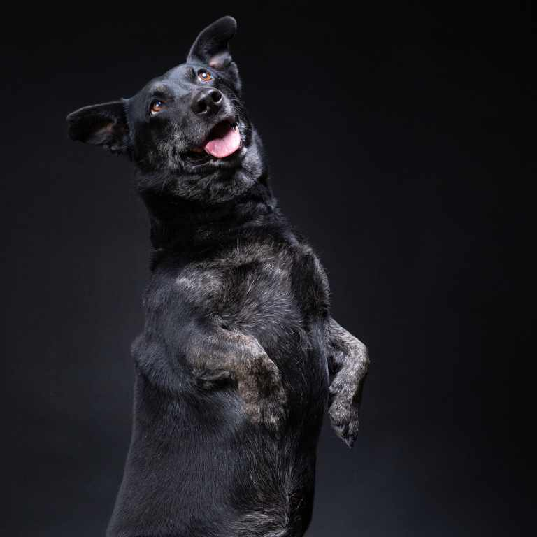
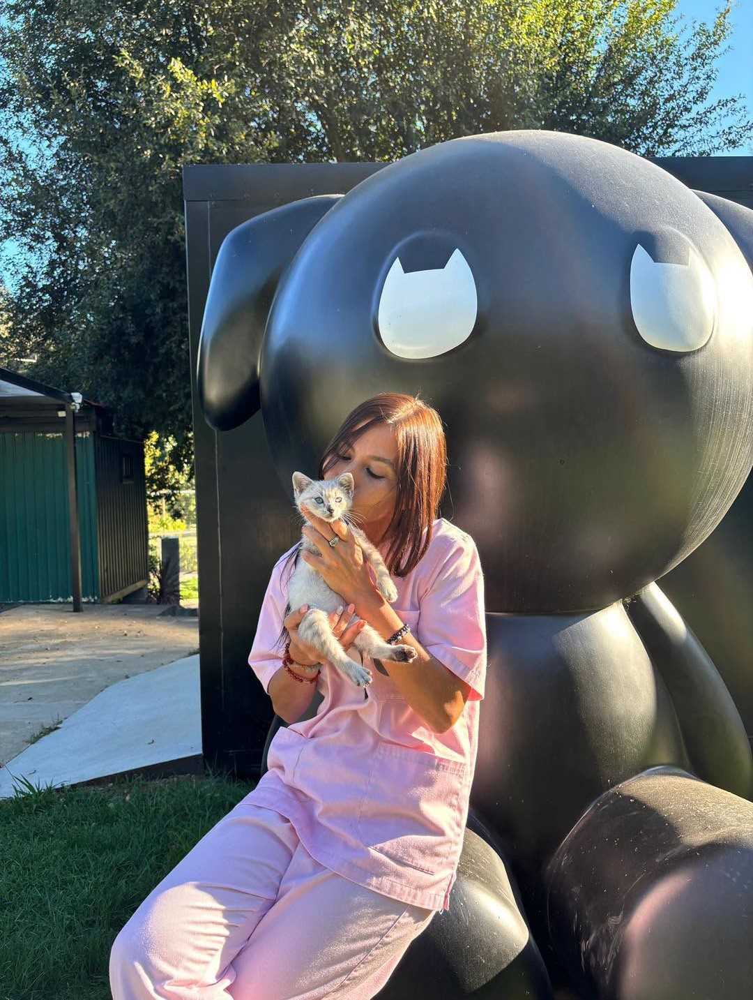

Cão · Macho · Senior
Bobi
Muito sociável, adora brincar no espaço exterior e dá-se bem com outros animais.
Saber mais sobre o Bobi →
A Aanifeira é uma associação sem fins lucrativos sediada em Santa Maria da Feira, dedicada ao resgate, reabilitação e acolhimento de animais abandonados e em risco.
O nosso objetivo principal é garantir o bem-estar de cada patudo e encontrar famílias responsáveis dispostas a oferecer um novo lar cheio de amor.
Estes patudos estão prontos para iniciar uma nova vida em família.
Cada gesto conta. Descubra como pode ajudar a cuidar, proteger e dar um futuro melhor aos animais.
Junta-te à nossa equipa! Precisamos de mãos e corações para cuidar, passear, limpar, acolher e dar carinho. Cada hora de ajuda faz a diferença.
Podes contribuir com donativos em dinheiro ou bens (ração, mantas, produtos de higiene, medicamentos). Toda a ajuda é essencial para continuarmos a cuidar com dignidade.
Se não podes adotar, podes apadrinhar um dos nossos animais. O teu contributo ajuda-nos a garantir cuidados veterinários, alimentação e conforto.
Travessa das Bocas – Zona Industrial de Mosteirô, 4520-409 Mosteirô
📞 256 106 323 / 934 703 277
✉️ aanifeira@aanifeira.pt